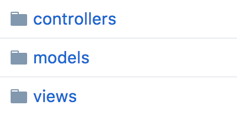

Modelo Vista Controlador
Modelo-vista-controlador (MVC) es un patrón de arquitectura de software, que separa los datos y la lógica de negocio de una aplicación de la interfaz de usuario y el módulo encargado de gestionar los eventos y las comunicaciones. Para ello MVC propone la construcción de tres componentes distintos:
- modelo,
- vista
- controlador
Este patrón de arquitectura de software se basa en las ideas de reutilización de código y la separación de conceptos, características que buscan facilitar la tarea de desarrollo de aplicaciones y su posterior mantenimiento
Para nuestra aplicación se ha seguido esta arquitectura de software como se puede ver en nuestro árbol de directorios

Modelo
Es la representación de la información, gestiona todos los accesos a dicha información, tanto consultas como actualizaciones.
Ejemplo de modelo en Sinatra, representa la tabla User, es decir, la información de todos los usuarios. El modelo valida la presencia de unos ciertos campos obligatorios, así como encriptar la contraseña. También se encarga de las interacciones con las otras tablas has_many (entidad-relación)

Vista
Presenta el 'modelo' (información y lógica de negocio) en un formato adecuado para interactuar (usualmente la interfaz de usuario), por tanto requiere de dicho 'modelo' la información que debe representar como salida.
En este ejemplo podemos ver parte de una vista sobre el index, vemos como la vista requiere del modelo para la visualización de información @user.name
<nav class="navbar navbar-expand-lg navbar-light bg-light">
<a class="navbar-brand" href="/">
<img src="images/ruby.jpg" width="30" height="30" class="d-inline-block align-top" alt="">
RuQuiz
</a>
<div class="collapse navbar-collapse" id="navbarText">
<ul class="navbar-nav mr-auto"></ul>
<span class="navbar-text" id="bienvenido">
¡Alumno
<%=@user.name%>!
</span>
<a href="/logout" class="btn btn-danger my-2 my-sm-0" role="button">Salir</a>
</div>
</nav>
Controlador
El controlador hace de intermediario entre la vista y el modelo, ya que responde a eventos del usuario (vista) e invoca métodos como respuesta (modelo) a peticiones del usuario sobre la información
Ejemplo básico de acción; cuando el usuario accede a login se redirecciona a /login y se renderiza la vista :login
get '/login' do
erb :login
end
Cuando el usuario hace login, el controlador comprueba la información con el modelo, manejando excepciones.
post '/login' do
@user = User.find_by(name: params["name"])
if @user && @user.authenticate(params[:password])
session[:id] = @user.id
redirect '/home'
else
flash[:error] = "No se ha encontrado el usuario"
redirect '/login'
end
end